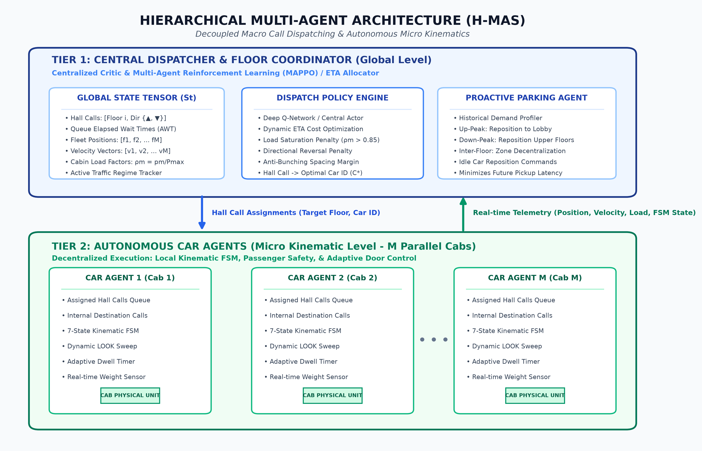
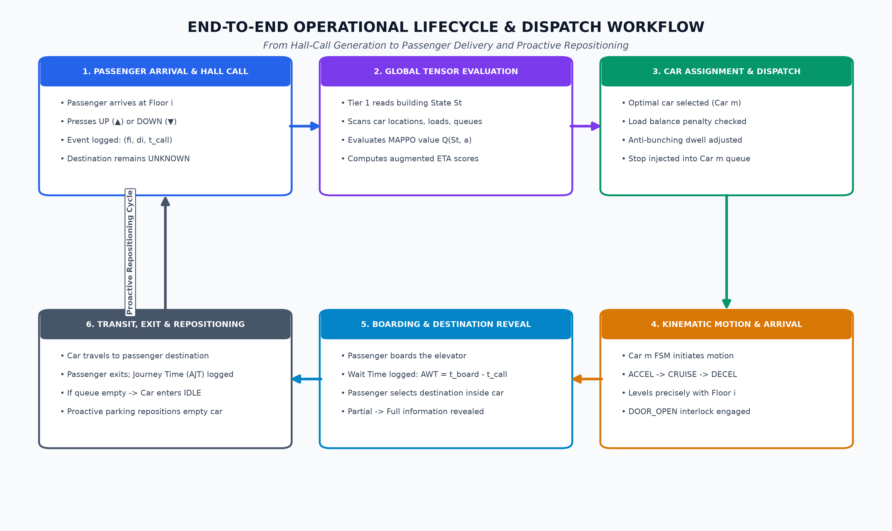
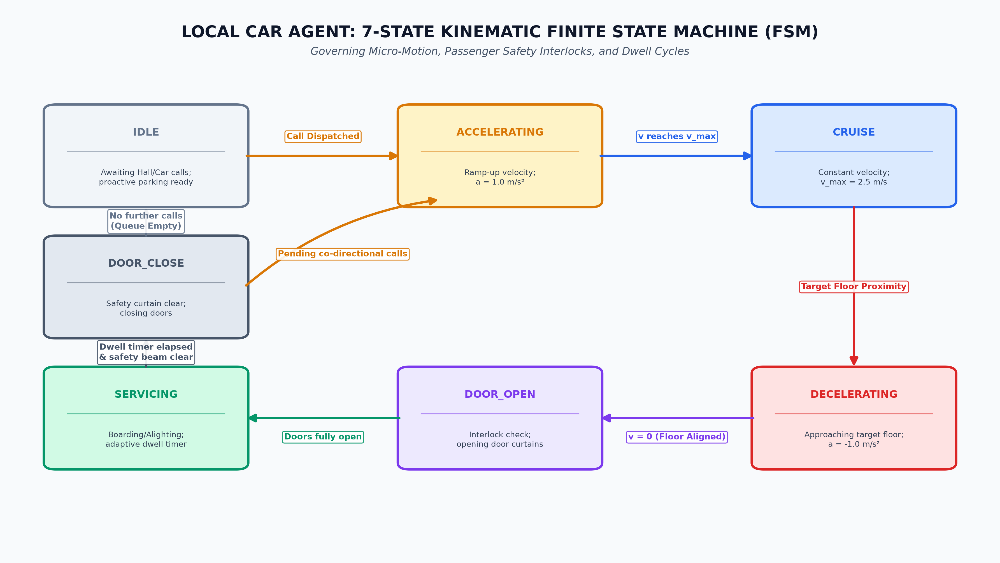

In modern high-rise infrastructures, vertical transportation accounts for 5% to 15% of total building electrical energy and represents a severe operational bottleneck. Conventional Elevator Group Control Systems (EGCS) rely almost exclusively on static heuristics (e.g., Nearest Car/ETA, Full Collective, or LOOK/SCAN). These rigid rule sets fail under stochastic non-stationary surges—specifically morning Up-Peak, evening Down-Peak, and lunchtime Inter-Floor travel. Furthermore, static heuristics suffer from elevator bunching (cars shadowing one another along the same trajectory, starving other floors) and cannot anticipate demand under partial observability. This project develops a Hierarchical Multi-Agent System (H-MAS) combined with Multi-Agent Reinforcement Learning (MARL / MAPPO) and proactive idle parking to minimize passenger wait times, journey times, and empty car travel.
Given an $N$-floor building serviced by $M$ independent elevator cars under a standard Two-Button Hall Call Interface ($\text{UP} / \text{DOWN}$): (1) Partial Observability: When a hall call is registered, the passenger's destination floor remains strictly hidden until boarding. (2) Multi-Objective Optimization: $\min_{\pi} \left[ w_1 \text{AWT} + w_2 \text{AJT} + w_3 \text{Starvation} + w_4 \text{EnergyIndex} \right]$, balancing wait times, transit delays, starvation caps, and motor energy wear.
The architecture decouples global call dispatching from local kinematic motion planning: Tier 1 (Global Dispatcher): Maintains global state tensor $S_t$ (positions, velocities, loads $\rho_m = p_m / P_{\max}$, hall queues); runs MAPPO / Centralized Critic + ETA Cost Allocator and Proactive Idle-Car Parking. Tier 2 (Autonomous Car Agents): Operates localized 7-State Kinematic FSMs, managing internal destination calls, dynamic LOOK sweeps, and adaptive door dwell times.

The complete operational cycle proceeds from passenger hall-call generation, global state evaluation, MARL dispatch, kinematic travel, passenger boarding/destination input, to delivery and proactive idle repositioning:


• Traffic Profiles: Simulates Poisson arrival flows under Up-Peak (80% lobby to upper), Down-Peak (80% upper to lobby), and Inter-Floor (uniform pairs).
• Pygame 2D Graphical Dashboard: Features real-time animated elevator shafts, cabin coordinates, waiting floor queues, capacity gauges, and streaming telemetry HUD (AWT, AJT, energy index). Supports scalable building configurations ($N = 10 \text{ to } 30+$ floors, $M = 2 \text{ to } 8$ cars).
• Expected Targets vs. Baselines (LOOK / Full Collective): 20%–30% lower AWT, 15%–25% lower AJT, zero starvation ($\text{Max Wait} < 180\text{s}$), and 15% lower energy wear.
| Phase | Key Deliverables / Milestones | Timeline | Lead |
|---|---|---|---|
| Phase 1 | Kinematic modeling, FSM state formulation, formal synopsis approval | Weeks 1 – 2 | Divyanshu & Team |
| Phase 2 | SimPy discrete-event core, Poisson generators, baseline heuristics (LOOK/Collective) | Weeks 3 – 5 | Viraj & Co-developer |
| Phase 3 | Tier-1 MARL Coordinator (MAPPO), Tier-2 FSM, and Proactive Parking Policy | Weeks 6 – 8 | Divyanshu & Viraj |
| Phase 4 | Pygame 2D visual dashboard, live HUD telemetry, and stress benchmarking | Weeks 9 – 12 | Vaibhav & Team |